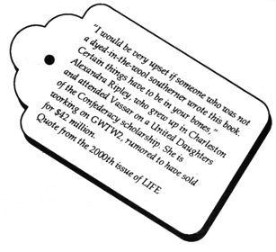
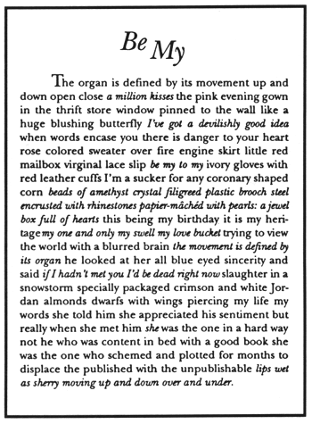

postcards
"Support Living Artists!"
The Mail Art of Susan E. King
Susan E. King's recent mail art works or "ephemera" are beautifully produced and packaged postcards and pamphlets. The "Support Living Artists!" series from 1987 and 1988 are witty compositions and constructions that by intertextuality, translucent layers of paper, and attached tags juxtapose, link and contrast the lives of "dead" artists (Van Gogh, Georges Sand, Rodin, Rilke, Paula Modersohn-Becker) with King and her artist friends. These cards point to the intense contrast between the original relationships and conditions of the dead artists, the present disposition of their work, and the struggles of living artists. My favorites of this group are cards in which letters from Vincent to Theo Van Gogh about money and about his paintings are contrasted with King's own financial straights. Tags hang off the cards announcing sale prices, and the actual astronomical prices of Van Gogh's paintings at auction.
This use of juxtapositions of texts, types, and tags enlivens another favorite of mine, "Georges Sand Valentine:" a Sand diary entry and a commentary by King are printed in a lovely warm ochre ink italic on a peach card, while a more desperate Sand quote is entered in the margin in grey. The romantic topos of locks of hair continues on the attached tag which announces the price at Sotheby's of a lock of Chopin's hair.
The counterpoint between hapless romanticism and crass commerce is part of King's self-avowedly feminist project. Indeed King, who also produces books, considers that "all ephemera may be feminist art."


Some of King's mail art hints at some of the more problematic aspects of this hybrid art form. Occasionally the elaborate production value shows up a sometimes slim writing content: a card on the Academy Awards is a case in point. King's works are post-modernist in their visually fractured composition, their efforts at cultural commentary, as well as in their brevity, occasional lack of depth, and double-edged emphasis on commerce.
The necessity for self-commodification imposed on artists by the cultural conditions of the 80s adds a disturbing aspect to King's recent mail art. Often the cards advertise King's shows and tell how to order more cards. Pieces that begin as literature end up as catalogs.
The element of sales undermines the essence of mail art: an unsolicited and unsoliciting bit of art that comes in the mail from one artist to another. But I sympathize with any artist's efforts to survive, especially those of a woman artist working on the margins of standard production, and so I would suggest that HOW(ever) readers order one set of cards for their own collection, and one set to send to friends as unsolicited and unsoliciting gifts of sophisticated, understated, beautifully produced art / social commentary.
(Contact Susan E. King, Paradise Press, P.O.Box 5306, Santa Monica, California 90405.)
 go to this issue's table of contents
 --Mira Schor
--Mira Schor
Mira Schor is co-editor, with Susan Bee, of
M/E/A/N/I/N/G.


 --Valentine from writer Dodie Bellamy, who is editor of
Mirage
no. 3, the women's issue.
--Valentine from writer Dodie Bellamy, who is editor of
Mirage
no. 3, the women's issue.